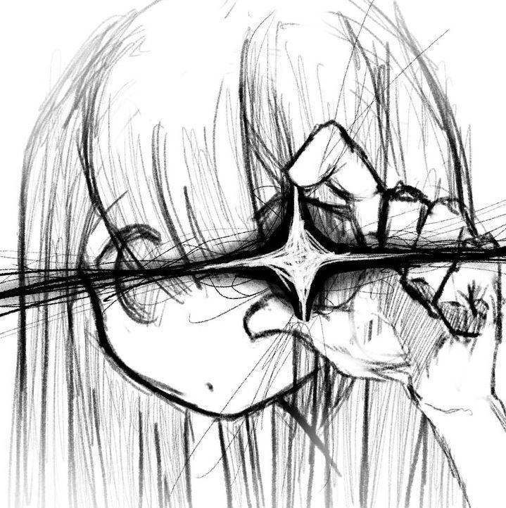

Minimalist developer portfolio with Discord-inspired profile card and dynamic banner theming.

Ak Developer
@heyitsak
🏴☠️
sailing uncharted waters
I am a developer focused on modern web engineering, clean system architecture, and thoughtful user experiences. I believe in writing readable, authentic code that stands the test of time.
Passionate about full-stack development, open source, and building tools that make people's lives easier.
Recent Projects
Most recent open-source software projects directly from GitHub.
Government Polytechnic Chopan - Modern Responsive Official Institutional Website (v1).
A gamified coding platform with 7 language tracks, zero-to-grandmaster progression, and in-browser execution.
What I'm Exploring
Driven by two core pursuits: understanding how humans, minds, and systems operate — and constructing software, tools, and ideas to navigate the unknown.
Psychology & Human Behavior
Why people decide, connect, and trust. Studying emotional intelligence, intention recognition, and the dynamics of leadership and influence.
- Decision Influence
- Emotional Intelligence
- Trust & Intentions
- Behavioral Dynamics
Strategy, Logic & Chess
Deep calculation under constrained resources. Finding the objectively superior move, positional intuition, and translating chess thinking into real-world decisions.
- Chess Calculation
- Game Theory
- Pattern Recognition
- Optimization
Software & Systems Construction
Building software from first principles. How instructions execute, how networks communicate, and writing clean, human-crafted code without build bloat.
- Web Standards
- TypeScript
- System Architecture
- Open Source
Space & Frontier Science
Astrophysics, orbital navigation, and space exploration. Exploring how humanity builds lasting technologies to investigate the biggest unsolved questions of the universe.
- Orbital Mechanics
- Astrophysics
- SpaceTech
- Frontier Research
Philosophy, Ethics & Character
Evaluating personal identity, goodness, and ambition. Distinguishing wisdom from raw knowledge, and striving to build meaningful things without chasing noise.
- Moral Philosophy
- Wisdom vs Knowledge
- Meaning & Purpose
- Character Judgment
Intelligence & Cognition
How exceptional thinking develops. Exploring working memory, pattern recognition, and the boundary between human reasoning and artificial neural networks.
- Cognitive Science
- Neural Networks
- Memory & Insight
- Reasoning Models
Get in Touch
Let's build something remarkable together.
Whether you have an interesting software project, an open engineering role, want to collaborate on open-source, or just chat about technology — my inbox is always open.